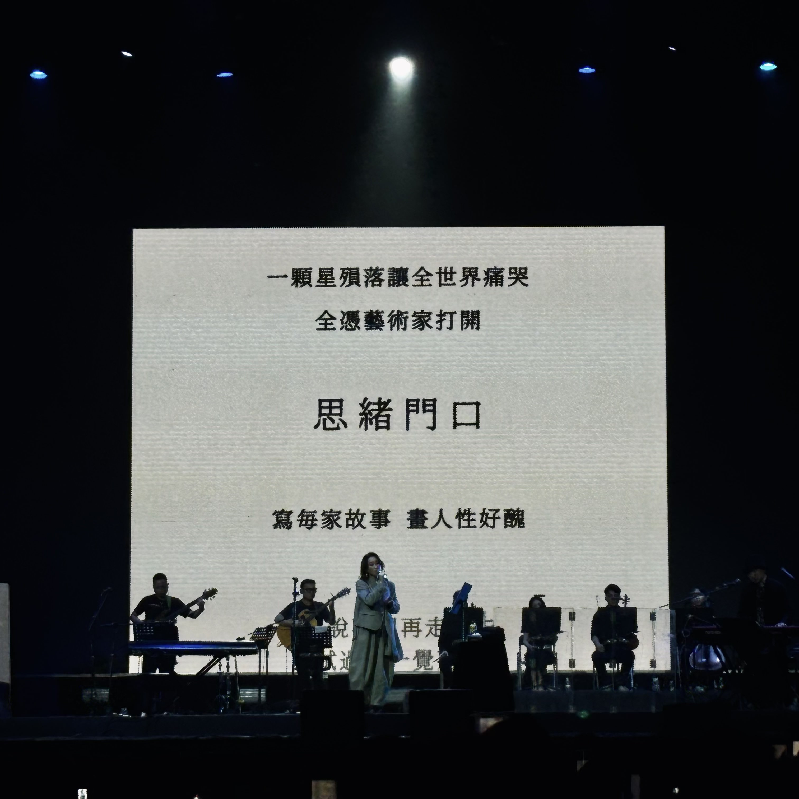
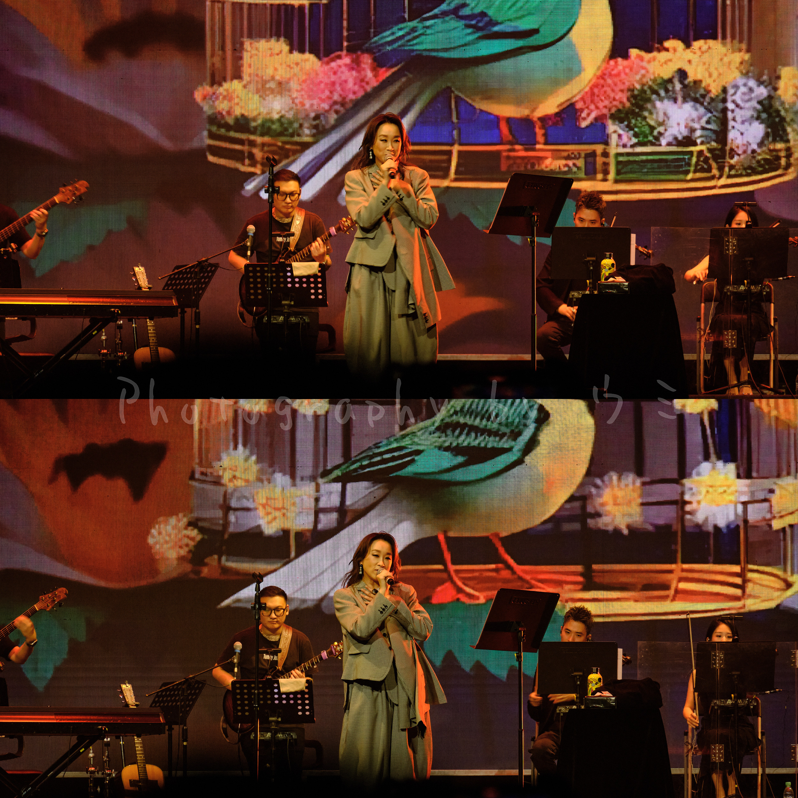

6月底看到王菀之的微信視頻號發了預告會來成都，馬上去問友要不要去看。

此曲只應天上有 #
- 不知道是不是我聽錯，唱「永遠幾遠」時佢說「給大家唱一首上一次唱是二十年前的歌」。我掐指一算這首不是還沒到二十年嗎…不過無所謂，不影響我聽到「有沒有試過心酸 酸得發覺良辰都苦短」的時候默默鼻酸。和現在網易雲上也只有live版的「永遠幾遠」音源相比，現場聽起來感覺又有些不同，細膩但總覺得佢唱得快要碎掉…
- 「迷失藝術」非常之好，Ivana發揮穩定，這也是難得的背景畫面有歌詞的一首..但無奈我位置太遠怎麼拍屏幕也沒有小紅書上其他博主拍出來那麼美；
 以及難以想像會聽到「手望」，雖說我和友都想聽這首，但在都沒有去找歌單提前溫習的情況下聽到這首算是意外之喜（這首出來的時候已經很晚我們都覺得今晚大概不會唱了）前奏一出我和友抓著手大叫嗚嗚嗚嗚。同時我腦補軒公聲音合唱不過份吧不過份吧… - 唱了飯戲攻心2的主題曲「我們曾經白頭到老」。雖然只看了第一部，因為不想看一地雞毛沒有去看第二部，但歌卻反覆聽過好多遍，哎現場怎麼這麼好聽，天籟一般…只是我以為會唱1的主題曲「狠愛狠愛你」這不比其他幾首好蹦嗎！
- 「末日」更是完全沒想到會唱🥹我也腦補的是有歪門聲音的4'40"版。「如果 禍與福都躲不過 就每天當沒明天 捉緊愛人過」是我之前就非常喜歡的一句詞,這次聽的時候腦中又是狂風暴雨巨浪滔天，只得浮木一條給我抱緊T T
- 彈唱了膾炙人口的國語歌，但我基本沒聽過…友：你那會兒大概還在小學，可是真的很多人聽過啊！我：小學我大概還在玩泥巴還沒聽過如此好的女聲————
 如沐春風
傾下偈，變身許願池燒臘少女 #
雖說平日也看一些粵語片但粵語的詞彙量和熟悉程度始終不夠，大概能聽懂七八成，多的細密的話就略過去了。讓我震驚的是她普通話流利與標準的程度。佢唱完一首便問台下「希望我說普通話的請舉手」看下面一群人在舉手就一個一個地數☝️「1、2、3、4、5..」數完之後笑咪咪地：這些就是我會說的所有普通話啦（哪有，分明國粵語切換自如）
佢一開口就是軟糯軟糯的：成都的朋友你們好～我愛↗️你→們（四川話）
可愛，太可愛了。
翻了翻我渣拍的視頻，佢唱完「許願池的希臘少女」之後閒聊，說「每次唱希臘少女總是會‘想到’…（搖頭）諗到‘希臘’…（搖頭）燒臘」
（台下爆笑）
佢聽到笑就小小聲回頭去求助馮製作人：…燒臘係咪咁講啊。
馮製作人一臉懵圈：你是說siu laap…
Ivana：siu laap啊 我好鍾意食嗰啲…
馮製作人：啊。
Ivana：———啊！！shao臘！shao臘少女！（笑）（轉向歌詞台開始碎碎唸）食太多燒臘就做唔到…做唔到少女…
（我和友在台下被可愛得一邊怪叫一邊笑得東倒西歪。）
一句說完馬上又切換到粵語：「我平時都冇講咁多嘢嘅，但係咧，係音樂會我就好想講多D嘅，即係初回限定我想講多D嘅，我覺得我哋距離好近，好近嘅」「但是呢（切回普通話），這個場地又大了一點，這個是東區音樂現場————啊，感謝這個場地。呃…有好多好玩的、好吃的」
我還以為佢講完客套話可以結束了,佢突然指着我們這些後排來了一句:
「誒…又好似遠咗少少。噉…我都唔好講咁多」（扭頭走回歌詞台）
笑死我了，哪裡來的古靈精怪可愛女人！
安可唱了「下次愛你」。因為好多人都提前離場了沒有等到最後，倒是十分幸運和友衝去了前排看她輕輕唱「待我相信愛是承受便找你」———欸，軒公也唱過喔…（x
唯一可惜是沒有等到最最最後合影環節，但那也不太重要啦！